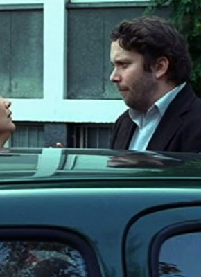
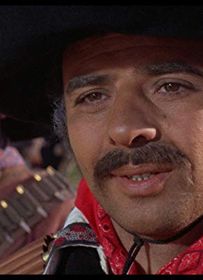

#2798 Maria, ihm schmeckt's nicht!
Alternativ: Maria, He Doesn't Like It (Originaltitel)

 IMDB-Wertung: 6.0 / 10
IMDB-Wertung: 6.0 / 10  Metascore: 0
Metascore: 0 
When Jan decides to marry his girl-friend Sara, he is not aware of his opponent: her father, who is an Italian patriarch. Antonio won't hear of a wedding anywhere else than in Campobello, his hometown in southern Italy. Jan is faced with an overwhelmingly large Italian family, forced to discover new traits in his bride once she's embraced her Italian side, and looking forward to a lifetime of being the fifth wheel. But by and by, he also realizes that Antonio, who left his family for Germany when he was young and married a German woman later, knows all these feelings first-hand and doesn't like him the less for them. Still, there is the question: Should Jan and Sara really get married?
Jahr: 2009
Dauer: 97 Minuten
FSK: 0
Land: Italien Studio: Constantin FilmTonspuren:
Untertitel:
Auflösung: 1080p (1920x1040) Größe: 6451 MB
Genre: Komödie
Regisseur: Neele Leana Vollmar
Drehbuch: Daniel Speck, Jan Weiler, Jan Weiler
Soundtrack: Niki Reiser
Darsteller:
 Mina Tander als Sara
Mina Tander als Sara- Maren Kroymann als Ursula - Saras Mutter
- Marleen Lohse als Ursula, jung
- Lino Banfi als Antonio - Saras Vater
-  Christian Ulmen als Jan
- Gundi Ellert als Gisela - Jans Mutter
- Peter Prager als Eberhard - Jans Vater
- Paolo De Vita als Raffaele
- Ludovica Modugno als Maria
- Lucia Guzzardi als Nonna Anna
- Antonino Bellomo als Nonno Calogero
- Leonardo Nigro als Antonio, jung
- Pierluigi Ferrandini als Marco
- Sergio Rubini als Egidio - Saras Onkel und Barbesitzer
- Enzo Salomone als Don Alfredo
-  Massimo Sarchielli als Benito Carducci
- Nicola Nocella als Enzo Carducci
- Raffaele Braia als B.M. Carducci
- Lia Cellamare als Nonna Anna, jung
- Dante Marmone als Calogero, jung
- Davide Donatiello als Raffaele, jung
- Jürgen Rißmann als Herr Oberwald
- Antonio Barbero als Piselli
- Danilo De Summa als Toni Carducci
- Philip Hagmann als Heinz
- Frank Trunz als Herr Wutzke
- Martin Horn als Herr Schulz
- Jan Weiler als Standesbeamter
- Klaus Neumann als Conductor
Datei: X:\2-Dilogie(G-M)\Ihm schmeckt's nicht\Maria, ihm schmeckt's nicht! (2009, FSK0, 1920x1040).mkv seit 16.12.2015
Festplatte: HD Collection-2(A-Z)-3(A-M)
 Alle Filme aus Gruppe '2-Dilogie(G-M)\Ihm schmeckt's nicht'
Alle Filme aus Gruppe '2-Dilogie(G-M)\Ihm schmeckt's nicht'